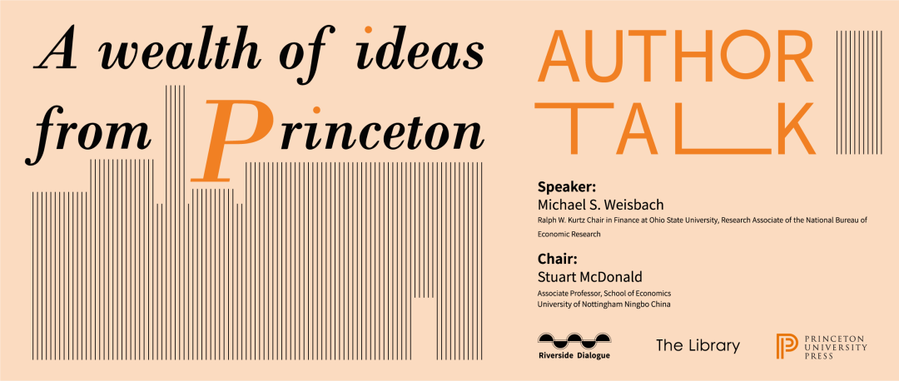

收录于合集
以下文章来源于普林斯顿读书汇 ，作者PUP China
 普林斯顿读书汇 .
普林斯顿读书汇 .
普林斯顿大学出版社 (Princeton University Press) 旗下唯一公众号。自1905年起，PUP已成为全球顶尖学术成果与思想的传播者。关注我们，获取最新英文书摘，领军学者访谈，作者讲座活动。
编者按
你是否志于攀登学术高峰，却仍不知博士生和学者生活的真实样貌？你是否苦于论文发表压力，因呆坐桌前灵感枯竭而陷入“自厌症”？学者职业技艺无法在论文专著中便可轻易学到，许多人终其学术生涯也未能掌握规划研究、写作论文和发表成果的必需技能。
为帮助有志于学术的年轻后辈，俄亥俄州立大学金融学教授、国际顶刊《金融研究评论》前主编Michael S. Weisbach 写作了 The Economist’s Craft 一书，手把手地教读者规划学术职业生涯、写作深刻且易读的论文。2022年1月17日9-11时，Weisbach 教授将为中国读者带来关于学术生涯的线上讲座，亲自介绍其著作的精彩内容。
本次讲座由普林斯顿大学出版社和宁波诺丁汉大学图书馆合作举办，面向社会开放，读者可点击下文链接线上听会，敬请关注。

主讲嘉宾介绍
Michael S. Weisbach， 俄亥俄州立大学金融学库尔茨讲席教授，美国全国经济研究所研究员。Weisbach 教授是顶级期刊 The Review of Financial Studies 的前主编，也曾担任其他五种学术期刊的副主编。他在金融和经济学领域拥有广泛的研究兴趣，专长于公司金融、公司治理和私募股权。他曾获得 Brattle Group 奖、Jensen 奖、Fama/DFA 奖和 Wharton/WRDS 奖等经济学重要奖项。
活动详情
讲座主题： Embarking on an academic career: an introduction to research, publishing, and professional development
主讲人： 俄亥俄州立大学金融学教授 Michael S. Weisbach
主持人： 宁波诺丁汉大学公共经济学副教授 Stuart McDonald
讲座时间： 2022年1月17日（周一）上午9:00-11:00（北京时间）
参与方式：点击 “阅读原文” 或复制链接 https://surl.ms/AgV 到浏览器参会
讲座内容详情
Michael S. Weisbach 教授将介绍他的新书 The Economist’s Craft 的内容。他将向包括经济学的社会科学研究生和年轻学者介绍如何选题、如何开展研究、如何清楚地表达观点，讨论如何构建一篇学术文章的各个章节，介绍论文从完成初稿、报告展示、修改、同行交流到最终出版的全过程，探讨期刊评审过程、教职与晋升的决定因素、如何度过研究生阶段、如何管理职业生涯并持续寻找新机会等关键问题。
点击以下链接，了解更多 The Economist’s Craft 书中内容：
在讲座中，Weisbach 教授将着重讲解以下两个主题：
如何做一名高效的博士研究生
其中部分要点：
不要将自己严格限定在你导师擅长的领域。大部分老师的知识和能力足够指导你想做的方向，而不仅仅是其自身的研究方向。
不要为了使用某种花哨的研究方法而写论文。找到一个有意思的问题，并使用合适的方法进行解决。
要建立自己的比较优势，比如独家的数据库、知识体系、计量或建模方法等，并且逐渐成为在某个问题上最有建树的学者。
要选择一位研究令你敬佩、同时性格令你喜欢的人作为导师。无论他研究做得多么好，如果你和他相处不来的话，你的生活将变得非常糟糕。
每次与导师（或者未来的导师）交流之前，要将自己的想法沉淀成一些文字，以便将谈话落实到具体的问题。提前将其发email给导师，这样使得见面交流更加高效。
要充分利用各种资源，尤其是通过各种seminar（研讨会）认识其他大学/机构的学者。
论文发表流程和期刊评审制度
其中部分要点：
期刊论文发表流程
如何选择合适的期刊投稿
如何打磨论文的摘要和简介
学位论文与期刊论文的差异
期刊编辑如何选择审稿人
论文被拒的原因与应对策略
如何提升成功发表的几率
编辑：康张城